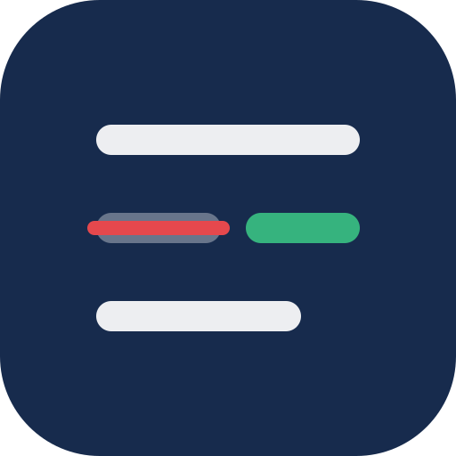

Redline for Confluence
Suggest edits on Confluence pages without editing them directly. Page editors review each suggestion and accept, reject or revert it.

RedlineSuggest edits on Confluence pages without editing them directly. Page editors review each suggestion and accept, reject or revert it.